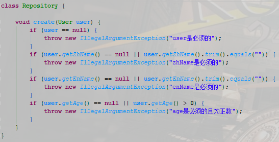
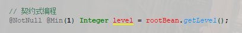
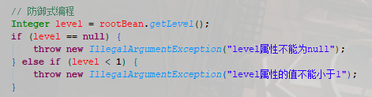

Bean Validation
为何被需要？
1. 抹平差异，能力共享
2. 契约编程，提效赋能
3. 晚期大众，接受度高
1. 抹平差异，能力共享
1️⃣：每一层都需要校验
2️⃣：无营养、臃肿代码过多，实为垃圾代码
3️⃣：积重难返，容易积累技术债
验证逻辑和业务逻辑分离，代码清晰；
只有高内聚才能低耦合；

二、契约编程，提效赋能
1️⃣：提供方履行义务，使用方才有权利
2️⃣：明确方法之界限，展示声明式规则
3️⃣：契约遵守在于双方，契约损毁的唯一原因理应只有：程序bug
4️⃣：契约式编程 > 防御式编程
契约编程，无人理会；防御编程，惨不忍睹；难道它是乌托邦？
契约编程让每个人对自己写的代码负责，辅以防御式编程才是平衡的艺术


三、晚期大众，接受度高
Java按技术采用生命周期分为：
1️⃣：创新者。勇敢的先行者，推动创新，如OpenJDK、Java14、TiDB等
2️⃣：早期采用者。引领时尚，享受新技术红利，如KOL（Oracle、IBM、阿里巴巴）等
3️⃣：早期大众。相对愿意接受颠覆和变革，如Kotlin、Java 11等
4️⃣：晚期大众。Java8、SB、SC、Dubbo、K8S、Jakarta EE各种技术等
一般的公司只会使用晚期大众技术，因为业务型公司，
稳定压倒一切
1/5